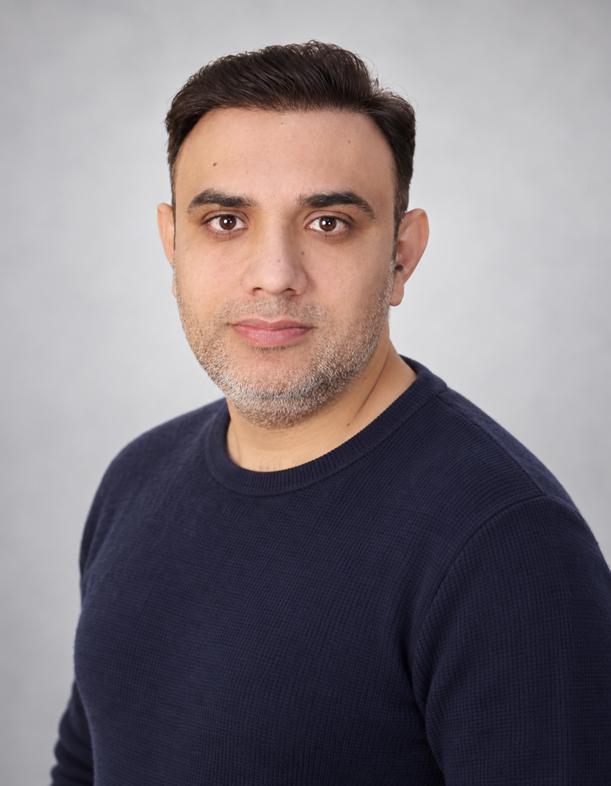

Enterprise Advisory
50+ enterprise clients consulted globally on private network adoption, use-case enablement, and business value differentiation.
A senior telecom leader designing enterprise connectivity solutions across 5G NR, O-RAN/VRAN, IoT, and AI-enabled industrial environments. With a strong record in private 5G strategy, program delivery, and global enterprise consultation, Ravinder partners with teams to turn connectivity into business impact.

Advising enterprise leaders on private 5G and Industry 4.0 adoption, and presenting at industry forums, policy consultations, and customer technology showcases.
50+ enterprise clients consulted globally on private network adoption, use-case enablement, and business value differentiation.
Participation in telecom forums and policy deliberations covering 5Gi, CNPN, NFAP, and national spectrum strategy.
Live PoCs and customer demonstrations from the private network lab and customer experience centre across manufacturing, mining, ports, and energy.
Ravinder Sharma is a senior solution architect with deep experience in 5G, private networks, O-RAN/VRAN, and enterprise transformation. He brings together RF engineering, solution strategy, vendor evaluation, and commercial design to help organizations build future-ready industrial connectivity programs.
Capabilities span strategy, architecture, performance optimization, policy engagement, and commercial delivery.
Multi-layer architecture design for enterprise-grade 5G networks and industrial connectivity transformation.
Use-case enablement for factories, mines, logistics hubs, ports, utilities, and connected worker programs.
Open RAN strategy, rollout planning, and technical evaluation aligned to emerging telco cloud models.
Consultation on spectrum planning, policy frameworks, NFAP amendments, and national telecom advocacy.
AI/ML-oriented industrial use cases with real-time analytics, visual intelligence, and automation.
NRC/MRC cost design, commercial offers, operating model planning, and customer-facing proposal response.
Coverage, capacity, KPI review, and optimization aligned to real-world RAN and enterprise requirements.
Customer-first solutioning for new business pursuits, technical compliance, and enterprise transformation.
Assessment of 5G OEM propositions, feature maturity, and strategic fit across enterprise use cases.
Technology adoption roadmaps, network evolution planning, and roadmap alignment with stakeholder goals.
Advisory support for industrial connectivity, value differentiation, and operational readiness decisions.
Driving delivery across engineering, sales, operations, and customer teams in global programs.
Private network design and industrial automation use cases aligned to digital transformation and real-time operations.
Connected worker, safety, and coverage strategy for remote, harsh, and high-risk operational environments.
Logistics and telemetry-focused connectivity planning for intelligent port and cargo operations.
Private 5G-backed automation, visibility, and workflow optimization for modern logistics ecosystems.
Connected field operations and resilient enterprise connectivity strategies for industrial monitoring and control.
Connected care, smart facilities, and reliable enterprise networking that supports critical operations.
Network modernization and operational visibility for resilient infrastructure and field connectivity.
Secure industrial use-case support and specialized connectivity planning for critical environments.
Safe-pass and IoT-based workforce enablement for industrial safety, tracking, and operational intelligence.
Industrial innovation centres supporting testing, prototypes, and customer demonstrations for advanced use cases.
Contributions in telecom forums and policy deliberations around 5Gi, CNPN, NFAP, and spectrum frameworks.
Open network exploration, vendor acceleration, and roadmap influence across emerging 5G/O-RAN strategies.
Kurukshetra University
For private 5G strategy, industrial connectivity planning, or telecom transformation conversations.